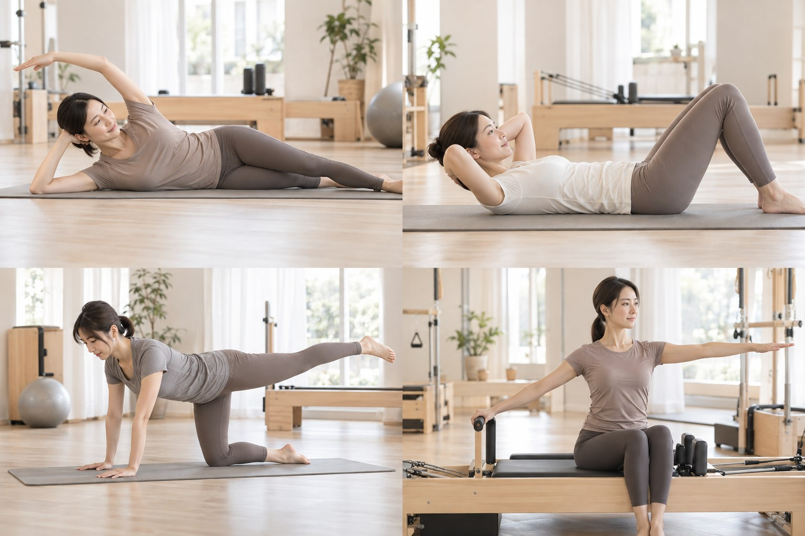

変更4
調整中評判のよかった変更2を土台に、一つずつ確認しながら調整していく案。
変更2の複製からスタート
LPを見るDESIGN VERSIONS
気になるカードから、それぞれのLPへ。以前の版も残して、見比べられます。
評判のよかった変更2を土台に、一つずつ確認しながら調整していく案。
変更2の複製からスタート
LPを見る
実際の写真とゆったりした余白。Mayroの空気が伝わる、大人のためのLP。料金ページも追加。
実写・生成りと深い茶色・料金案内
LPを見る
わたしに戻る、
ひと呼吸。
短いストーリー型のLP。スタジオ紹介から体験予約へつなぐ構成。
コンパクトな流れ・大きなスタジオ写真
LPを見る白・クリーム色・淡いグリーンの背景。説明と余白を大きく取った案。
背景の雰囲気・読みやすい余白
LPを見る
参考画像に合わせて、写真カード・図解・横並びの4ステップを復元した案。
写真で伝える構成・参考画像に近い配置
LPを見る「気に入った版」の印はこのブラウザーに保存されます。別の端末には共有されません。